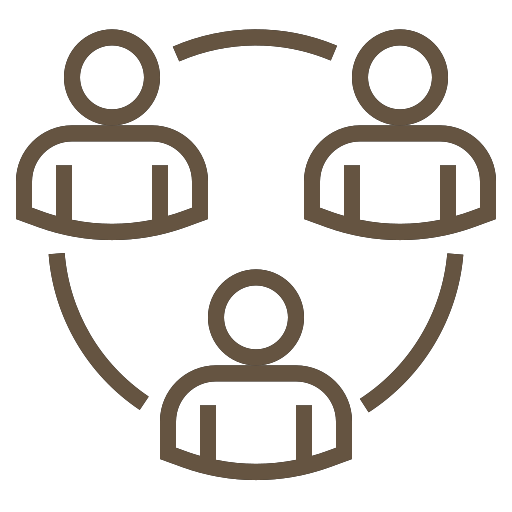

Presentation
Objectifs

Utilisation d'un réseau convolutif de neuronnes pour la détection de styles architecturaux.

Création d'un guide touristique collaboratif, utilisable par tous.

Mise en place d'une base de données évolutive à l'aide de l'avis des utilisateurs